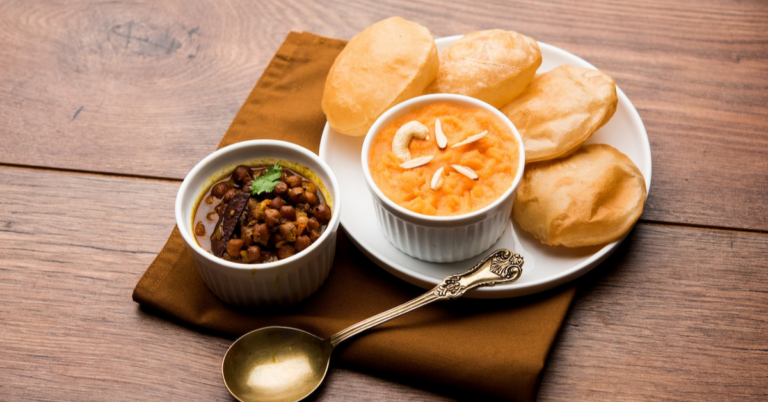

It seems a bit proscribed to have halwa puri during weekdays but here I am, on a Wednesday morning, having halwa puri at my local neighborhood stall. It’s a wonderful day today. The weather is great – windy and crisp, the kind that makes living in Islamabad worthwhile. It reminds me of my Sundays as a kid when all I wanted was the most crispy puri my mom made. Theoretically, halwa puris, the most amazing of all breakfasts are reserved for weekends. And I have to warn you, halwa puri isn’t for you if you aren’t patient (Dude, you will have to wait for hours in the queue) or have a weak stomach.
